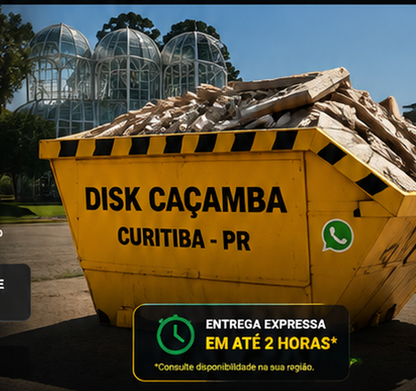
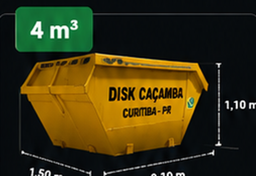
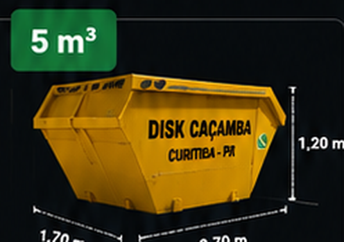
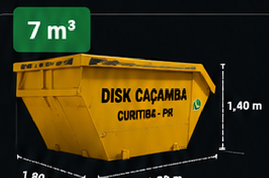

Entrega rápida
Consulte rota e disponibilidade para seu endereço.
Entregamos rápido. Retiramos no prazo. Atendimento direto pelo WhatsApp para obras, reformas e limpeza.

Consulte rota e disponibilidade para seu endereço.
Orçamento direto e transparente pelo WhatsApp.
Orientação sobre materiais aceitos na caçamba.
Fale com a equipe para tirar dúvidas e reservar.
Escolha a capacidade ideal para sua necessidade

Ideal para pequenas reformas, limpeza de quintal e volumes leves.

Boa opção para reformas maiores, construções e mais volume de entulho.

Indicada para grandes obras, demolições e serviços com maior volume.
Consulte disponibilidade para sua localidade
Atendimento em Curitiba e nas principais cidades da RMC, conforme rota e disponibilidade.
Consulte prazo para Curitiba e principais cidades da região.
Envie bairro, endereço, tamanho e tipo de material.
Você recebe valor e disponibilidade antes de fechar.
Utilize a caçamba pelo período combinado.
Retirada conforme combinado e orientação de descarte.
Preencha os dados e nós abrimos o WhatsApp com seu pedido pronto para enviar.
Atendemos Curitiba e diversas cidades da Região Metropolitana conforme rota e disponibilidade. Envie seu endereço para confirmação.
Se estiver em dúvida, envie uma foto ou explique o volume do material. A equipe orienta entre 4 m³, 5 m³ e 7 m³.
Pode haver entrega rápida dependendo da rota e disponibilidade. O prazo é confirmado no atendimento.
Sim, você pode consultar a disponibilidade de ajudante junto com a locação da caçamba.